ABSTRACT
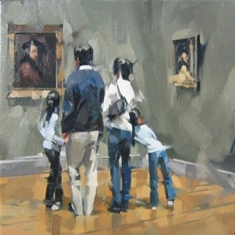
S
PENAFSIRAN SEBUAH SENI
K
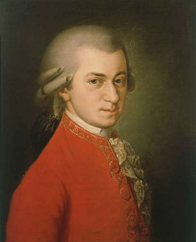
2. Karya seni lain dalam genre yang sama oleh seniman lain, khususnya dalam gaya atau tradisi yang sama. Penghargaan terhadap puisi pastoral "Lycidas," oleh penyair Inggris John Milton, tidak diragukan ditingkatkan oleh studi tentang tradisi pastoral dalam puisi, yang dengannya Milton ingin para pembacanya berkenalan. Mempelajari “Lycidas” secara terpisah akan membuat pembaca tidak dapat merasakan banyak kekayaan tekstur puisi dan bahkan membuat beberapa referensi di dalamnya tidak dapat dipahami.
3. Sebuah studi tentang fakta-fakta yang relevan tentang media artistik, seperti keterbatasan instrumental atau keuntungan organ pipa pada masa komposer Jerman Johann Sebastian Bach (1685-1750) atau mode penyajian tragedi Yunani kuno di teater Athena . Seorang kenalan dengan konvensi, idiom artistik di mana seniman beroperasi sering mengarah pada pemahaman yang lebih baik tentang aspek-aspek tertentu dari karya seniman dan membantu untuk menghindari kesalahpahaman tentang itu.
4. Sebuah studi tentang zaman di mana sang seniman hidup — semangat waktu dan ide-idenya saat ini, pengaruh kompleks yang membentuk sang seniman, bahkan kondisi sosial, ekonomi, dan politik dari waktu dan tempat di mana sang seniman bekerja . Terkadang pengetahuan semacam itu memiliki relevansi yang meragukan. Dapat dikatakan bahwa tidak ada bantuan untuk studi 82 kuartet gesek dan 104 simfoni komposer Austria abad ke-18 Joseph Haydn disediakan dengan membaca tentang kondisi politik dan ekonomi pada zamannya. Sangat menarik untuk mempelajari evolusi kuartet tali atau simfoni dari asalnya melalui Haydn hingga saat ini, tetapi ini tampaknya merupakan evolusi yang dapat dilacak sepenuhnya dalam bentuk seni dan tidak tergantung pada faktor-faktor di luarnya. Namun, tampaknya penting untuk mengetahui, misalnya, bahwa Milton mengetahui astronomi Copernicus yang baru tetapi dengan sengaja memilih di Paradise Lost untuk membuat kosmos Ptolemeusnya, sistem astronomi kuno yang sudah penuh dengan literatur, mitologi, dan tradisi.
5. Studi tentang kehidupan artis. Ahli antologi sastra terus-menerus menganggap bahwa ini adalah pertimbangan penting, karena mereka menyediakan biografi terperinci sebelum pilihan mereka oleh masing-masing penulis. Memang benar, tentu saja, bahwa pengetahuan tentang kehidupan artis dapat mengalihkan perhatian dari karya seniman, seperti dengan mereka yang tidak dapat mendengar kuartet Ludwig van Beethoven tanpa terus-menerus berpikir, “Sayang sekali bahwa ia tuli saat itu! ” Namun pengetahuan semacam itu juga dapat meningkatkan pengalaman suatu karya; beberapa orang akan mengatakan, bagaimanapun juga, itu membantu mengetahui bahwa Milton buta ketika dia menulis soneta "On Blindness-nya." Ini adalah relevansi pengetahuan semacam ini dengan apresiasi terhadap puisi, sebagai puisi, yang dalam perselisihan. Dalam setiap kasus, bagaimanapun, harus diingat bahwa berkenalan dengan biografi seniman adalah sarana menuju tujuan, peningkatan apresiasi dan pemahaman tentang karya seni,jika tidak secara estetika tidak relevan.
6. Studi tentang niat artis. Ketika kesulitan muncul seperti apa yang harus dibuat dari sebuah karya seni atau ketika beberapa interpretasi yang bertentangan datang ke pikiran, bagaimana kesulitan yang harus diselesaikan? Satu saran yang jelas adalah berkonsultasi dengan artis, jika itu mungkin; catatan atau memoar artis, jika ada; atau kesaksian teman, kenalan, rekan artis. Sangat menggoda untuk percaya bahwa, dengan cara apa pun yang diinginkan seniman, inilah cara karya itu harus ditafsirkan. Karena tentu saja seniman tahu karya mereka sendiri lebih baik daripada orang lain, dan untuk alasan itu kata-kata mereka sendiri adalah hukum. Karya seni harus berdiri sendiri, tanpa bantuan dari pencipta mereka. Jika niat artis tidak terealisasi secara memadai di dalam karya, memaksa penerima untuk pergi ke luar untuk meminta bantuan, ini dianggap sebagai cacat artistik. Terlebih lagi, begitu karya telah selesai dan disajikan kepada dunia, ia menjadi milik dunia dan tidak lagi hanya milik sang seniman, dalam interpretasinya sang seniman sekarang menjadi hanya satu kritik di antara banyak orang, yang kata-katanya harus dihormati tetapi tidak dianggap sebagai otoritas terakhir. mungkin bahkan ada interpretasi yang dapat diterima (seperti interpretasi Freudian tentang Hamlet Shakespeare) yang tidak terpikirkan oleh sang seniman pada saat itu.
TAMPILAN SEBUAH KARYA
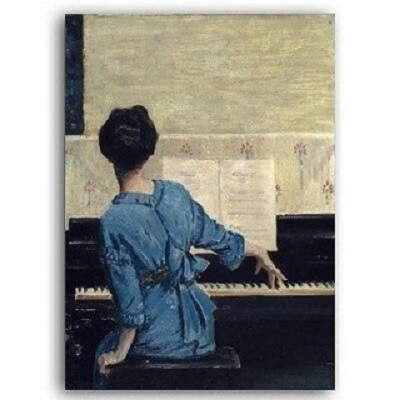
K
Saling berhubungan untuk menciptakan efek keseluruhan dari karya seni. Visual memiliki hubungan satu sama lain: • Sebagian besar gambar memulai hidup mereka dari beberapa garis. • Garis saling silang untuk membuat bentuk. • Bentuk dapat diisi dengan nada dan warna, untuk membuat pola. • Suatu bentuk dapat dirender dengan permukaan kasar untuk membuat tekstur. • Suatu bentuk dapat diproyeksikan menjadi tiga dimensi untuk membuat bentuk. Setiap elemen juga dapat digunakan secara individual untuk menekankan karakter khusus mereka sendiri dalam sebuah karya seni. Elemen yang berbeda dapat mengekspresikan kualitas seperti gerakan dan ritme, ruang dan kedalaman, pertumbuhan dan struktur, harmoni dan kontras, kebisingan dan ketenangan dan berbagai macam emosi yang membentuk subjek seni yang hebat. 1.Visual - Garis
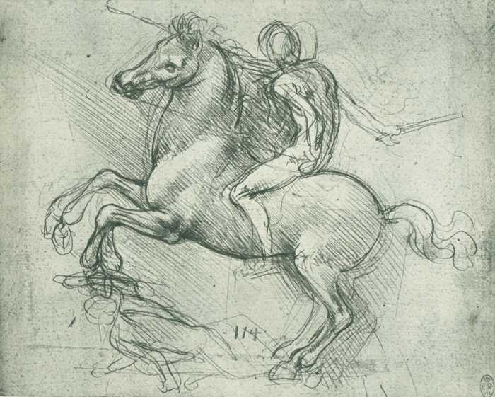
LEONARDO DA VINCI (1452-1519)
Studi untuk Monumen Berkuda, 1488 (titik logam di atas kertas biru)
Garis adalah dasar dari semua gambar. Ini adalah elemen seni visual pertama dan paling serbaguna. Garis dalam karya seni dapat digunakan dengan berbagai cara. Ini dapat digunakan untuk menyarankan bentuk, pola, bentuk, struktur, pertumbuhan, kedalaman, jarak, ritme, gerakan dan berbagai emosi.
2.Visual - Bentuk 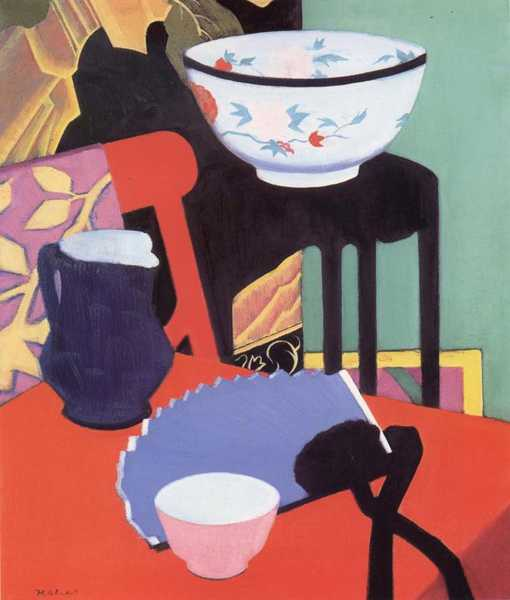
FRANCIS CAMPBELL BOILEAU CADELL (1883-1937)
The Blue Fan, 1922
Bentuk dapat alami atau buatan manusia, teratur atau tidak teratur, datar (2 dimensi) atau padat (3 dimensi), representasional atau abstrak, geometris atau organik, transparan atau buram, positif atau negatif, dekoratif atau simbolis, berwarna, berpola atau bertekstur.
Perspektif Bentuk: Sudut dan kurva bentuk tampak berubah tergantung pada sudut pandang.
3.Visual - Nada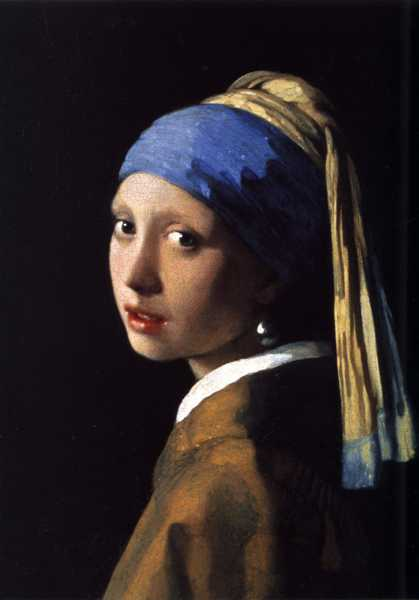
JOHANNES VERMEER (1632-1675)
Girl with the Pearl Earring, 1665 (cat minyak di atas kanvas)
Nada adalah terang atau gelap suatu warna. Nilai nada karya seni dapat disesuaikan untuk mengubah karakter ekspresifnya.
Nada dapat digunakan:
• untuk membuat kontras terang dan gelap.
• untuk menciptakan ilusi bentuk.
• untuk menciptakan suasana dramatis atau tenang.
• untuk menciptakan rasa kedalaman dan jarak.
• untuk menciptakan ritme atau pola dalam suatu komposisi.
4.Visual - Warna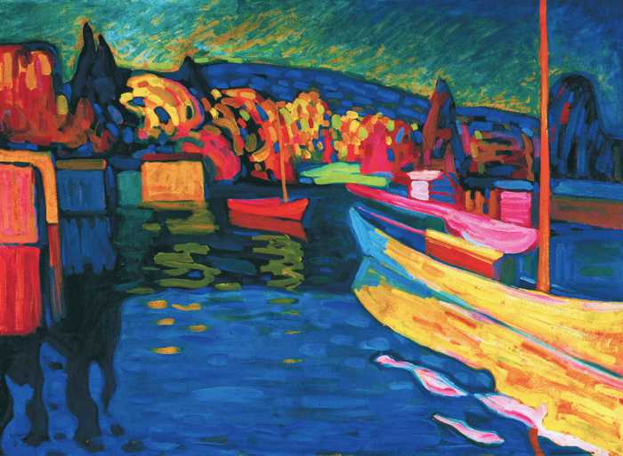
WASSILY KANDINSKY (1866-1944)
Lansekap Musim Gugur dengan Kapal, 1908 (minyak di kapal)
Warna adalah elemen visual yang memiliki efek paling kuat pada emosi kita. Kami menggunakan warna untuk menciptakan suasana atau suasana karya seni.
Ada banyak pendekatan berbeda dalam penggunaan warna:
• Berwarna seperti cahaya
• Warna sebagai nada
• Warna sebagai pola
• Warna sebagai bentuk
• Warna sebagai simbol
• Warna sebagai gerakan
• Warna sebagai harmoni
• Warna sebagai kontras
• Warna sebagai suasana hati
5.Visual - Pola
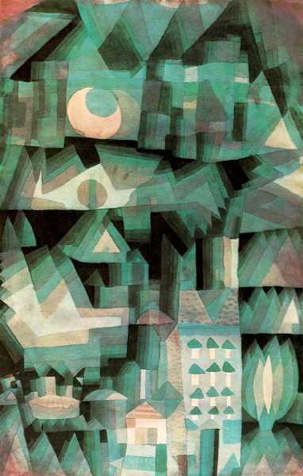
PAUL KLEE (1879-1940)
Dream City, 1921
Pola dibuat dengan mengulangi atau menggemakan elemen-elemen karya seni untuk mengomunikasikan rasa keseimbangan, harmoni, kontras, ritme atau gerakan.
Ada dua jenis dasar pola dalam seni: Pola Alami dan Pola Buatan Manusia. Baik pola alami dan buatan manusia dapat teratur atau tidak teratur, organik atau geometris, struktural atau dekoratif, positif atau negatif dan berulang atau acak.
Pola Alami: Pola dalam seni seringkali didasarkan pada inspirasi yang kita dapatkan dari mengamati pola-pola alami yang terjadi di alam. Kita dapat melihat ini dalam bentuk daun dan cabang-cabang pohon, struktur kristal, spiral cangkang, simetri kepingan salju dan pola kamuflase dan sinyal pada hewan, ikan dan serangga.
Pola Buatan Manusia: Pola dalam seni digunakan untuk keperluan struktural dan dekoratif. Sebagai contoh, seorang seniman dapat merencanakan struktur dasar karya seni dengan menciptakan pola komposisi garis dan bentuk. Dalam komposisi itu ia dapat mengembangkan elemen visualnya untuk menciptakan pola warna, nada, dan tekstur yang lebih dekoratif di seluruh karya.
6.Visual - Tekstur
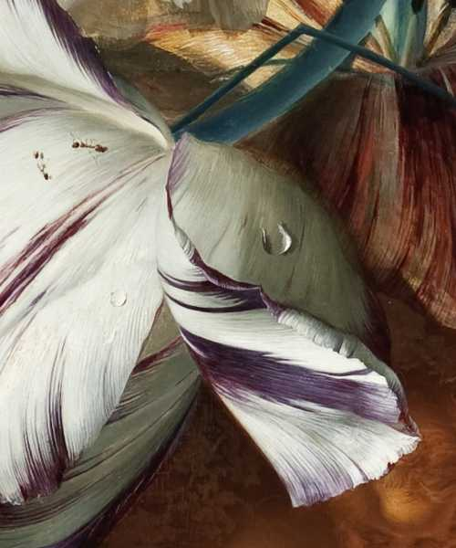
JAN VAN HUYSUM (1682-1747)
Detail Bouquet of Flowers dalam Guci, 1724
Tekstur adalah kualitas permukaan karya seni - kekasaran atau kehalusan bahan dari mana ia dibuat.
Tekstur Optik: Seorang seniman dapat menggunakan teknik lukisnya yang terampil untuk menciptakan ilusi tekstur. Sebagai contoh, dalam detail dari masih tradisional Belanda hidup di atas Anda dapat melihat verisimilitude luar biasa (penampilan menjadi nyata) di serangga dicat dan tetesan air pada permukaan sutra kelopak bunga.
Tekstur Fisik: Seorang seniman dapat melukis dengan sapuan kuas ekspresif yang teksturnya menyampaikan energi fisik dan emosional seniman dan subjeknya. Mereka juga dapat menggunakan tekstur alami bahan-bahan mereka untuk menunjukkan kualitas unik mereka sendiri seperti butiran kayu, keeratan pasir, pengelupasan karat, kekasaran kain dan noda cat.
Tekstur Ephemeral: Ini adalah kategori ketiga dari tekstur yang bentuknya sekilas dapat berubah seperti awan, asap, api, gelembung, dan cairan.
7.Visual - Formulir
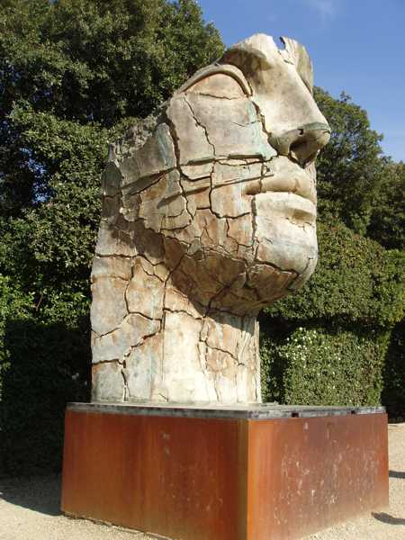
IGOR MITORAJ (1944-2014)
Tindaro Screpolato (Tyndareus Cracked), 1998 (perunggu)
• Bentuk adalah volume fisik dari suatu bentuk dan ruang yang ditempati.
• Formulir dapat bersifat representasional atau abstrak.
• Bentuk umumnya mengacu pada patung, desain 3D dan arsitektur tetapi juga dapat berhubungan dengan ilusi 3D pada permukaan 2D.
Bentuk Tiga Dimensi dapat dimodelkan (bentuk ditambahkan), diukir (bentuk dikurangi) dan dibangun (bentuk dibangun). Ini dapat dibuat dari bahan pahatan seperti tanah liat, lilin, plester, kayu, batu, beton, logam cor dan konstruksi, plastik, resin, kaca dan media campuran. Ini mungkin juga kinetik, melibatkan cahaya dan gerakan yang dihasilkan oleh cara alami, mekanis dan elektronik. Baru-baru ini proses CAD pencetakan 3D telah ditambahkan ke daftar proses pahatan.
Bentuk Dua Dimensi membangun ilusi 3D dalam media 2D dengan manipulasi terampil dari elemen visual. Gambar perspektif, trompe l'oeil [1], program grafik komputer 3D dan hologram adalah contoh bentuk 2D.
KARYA YANG MENDUNIA
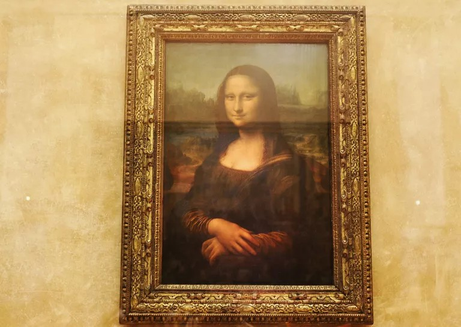
1
Romeo dan Juliet Kisah cinta di Verona Salah satu kisah cinta paling terkenal dan paling tragis, yaitu kisah Romeo dan Juliet, berlatar belakang abad pertengahan Verona. Meskipun William Shakespeare, yang menulis kisahnya pada tahun 1597, tidak pernah pergi ke Verona sendiri, dia menjadikan kota sebagai pusat dari kisahnya dan memberi Verona warisan yang dapat dirasakan di seluruh kota bahkan hingga hari ini. Pasangan dan romantika yang penuh kasih dari seluruh dunia mengunjungi kota abad pertengahan yang indah di sungai Adige dan berjalan di jejak Romeo dan Juliet. Lebih... Romeo dan Juliet Monumen Shakespeare Kisah Romeo dan Juliet Pada 1597 William Shakespeare menerbitkan "Romeo and Juliet", yang akan menjadi salah satu kisah cinta paling terkenal di dunia sastra. Kisah drama Shakespeare diatur di Verona, di mana dua protagonis utama, Romeo dan Juliet, bertemu satu sama lain dan menikmati cinta mereka. Keduanya berasal dari dua keluarga yang berbeda, Capulets dan the Montagues, yang merupakan musuh bebuyutan. Jadi mereka memutuskan untuk merahasiakan cinta mereka dan menikah dengan Friar Laurence. Terlepas dari semua kehati-hatian, suatu hari Romeo terlibat dalam perkelahian dengan sepupu Juliet, Tybalt, yang ia bunuh dalam suatu konfrontasi. Romeo dibuang dari Verona dan melarikan diri ke Mantua. Ketika orang tuanya mendesak Juliet untuk menikah, dia meminta bantuan Friar Laurence, yang memberinya ramuan tidur yang seharusnya memalsukan kematiannya. Dia menjelaskan rencananya kepada Romeo dalam sebuah surat, yang tidak pernah sampai padanya. Merasa bingung atas dugaan kematian Juliet yang dicintainya, Romeo kembali ke Verona dan mengambil nyawanya sendiri di peti mati terbuka Juliet. Tak lama setelah itu, Juliet bangun dari tidurnya, melihat apa yang telah terjadi dan juga mengambil nyawanya. Kedua keluarga yang bertikai sekarang mengakui keterlibatan mereka dan berdamai di makam anak-anak mereka. Romeo dan Juliet Makam Juliet Mengikuti jejak Romeo dan Juliet di Verona Kota tua abad pertengahan Verona sangat ideal untuk menempatkan diri dalam situasi Romeo dan Juliet. Banyak pasangan dan turis yang penuh kasih datang ke sini setiap tahun untuk mengikuti jejak Romeo dan Juliet. Sebuah foto dari balkon Juliet yang terkenal, pemandangan rumah Romeo atau beberapa menit renungan dihabiskan di makam Julia. Tidak peduli di mana Anda melihat di seluruh kota, Anda akan menemukan pasangan yang penuh kasih di mana saja yang menempelkan deklarasi cinta mereka dan inisial mereka pada selembar kertas kecil di dinding atau mengabadikan diri mereka di dinding atau batu rumah - seringkali ilegal. Meskipun drama Shakespeare tidak pernah sesuai dengan kenyataan, Verona menyampaikan pesona yang sangat istimewa terutama bagi pecinta sehingga mereka membayangkan mereka dapat merasakan kisah nyata di balik karya sastra, seolah-olah Romeo dan Juliet benar-benar ada.
3.Pinner Qing Dynasty Vase
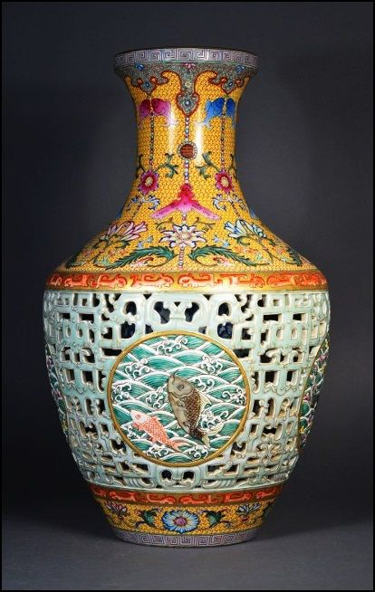
Artefak Cina yang paling diperebutkan dalam sejarah lelang, vas dinasti Pinner Qing, akhirnya terjual setelah pertempuran hukum yang panjang. Awalnya, Vas Dinasti Qing Pinner diperkirakan salah mengambil nilai hanya $ 1.300.
Vas Cina yang elegan menampilkan pita emas dan motif ikan, vas Pinner menyandang meterai kekaisaran dan karenanya dianggap berasal dari kiln kekaisaran dinasti Qing, dibuat untuk kaisar Cina Qianlong antara tahun 1736 dan 1795. vas tanggal dari periode kaisar Qianlong, yang memerintah 1735-1796, pada puncak dinasti Qing.
Pinner Qing Dynasty Vase dijual dengan harga sekitar £ 53.000.000 ($ 73.662.050). Vas emas yang menampilkan motif ikan dan bunga, Vas Dinasti Qing Pinner secara luas dipuji karena kemurnian dan keindahannya. Pinner Qing Dynasty Vase telah menaklukkan daftar barang antik paling mahal di dunia.
Bulan lalu, Sotheby menjual vas dinasti Qing lain di Hong Kong seharga $ 32 juta. Dicat langit biru dan kuning kekaisaran dan dihiasi dengan medali yang menggambarkan ikan mas melompat, vas 16 inci berasal dari dinasti Qing, saat pembuatan porselen Cina berada di puncaknya. Kanan: Vas Porselen Biru dan Putih Cina, Dinasti Qing, dijual dengan harga $ 1.375 melalui Doyle New York (September 2015).
Vas Dinasti Qing yang indah ini anehnya ditemukan di Pinner, London, Inggris dan merupakan misteri bagaimana sampai di sana jauh-jauh dari Cina. Bulan lalu, Sotheby menjual vas dinasti Qing lain di Hong Kong sebesar $ 32 juta. Bagian belakangnya menampilkan insert porselen yang luar biasa - salinan vas Dinasti Qing yang bagus dan rumit.
Barang antik paling mahal yang pernah dijual yang bisa berada di bawah Gaugin Anda adalah Pinner Qing Dynasty Vase, yang dijual di lelang Inggris sebesar $ 80,2 juta pada 2010. Itu adalah Vas Dinasti Qing Pinner dan dilelang seharga £ 53.000.000.
Dia percaya vas itu bisa dijarah oleh tentara Inggris atau Perancis dari Kota Terlarang atau Istana Musim Panas keluarga Kekaisaran tua di Beijing menjelang akhir Perang Opium Kedua tahun 1856-1860 - klimaks dari perselisihan dagang antara Cina, di bawah Qing dinasti, dan Kerajaan Inggris atas perdagangan opium ilegal Inggris. Vas keramik dibuat pada masa pemerintahan kaisar keempat di dinasti Qing yang memerintah kekaisaran dari 1735 hingga 1796.
Dinasti yang paling lama bertahan dalam sejarah baru-baru ini, periode Qing melihat beberapa kemajuan teknologi yang mengarah pada lebih banyak pendekatan baru untuk keramik dan vas, termasuk berbagai sekolah "famille" yang sangat dihargai oleh para pecinta Eropa. Para ahli mengevaluasi karya itu dan memperkirakan benda itu bisa terjual lebih dari satu juta dolar, mencatat bahwa benda itu dibuat sekitar tahun 1740 untuk pengadilan kerajaan Qianlong, kaisar kelima dinasti Qing, suatu periode ketika pembuatan porselen Cina telah mencapai puncaknya. Para ahli mengatakan itu adalah bagian yang luar biasa, dibuat untuk kesenangan pribadi dinasti Qing Kaisar Qianlong, pada saat pembuatan porselen Cina telah mencapai puncaknya.
Dibuat pada tahun 1740, barang antik ini adalah karya seni Dinasti Qing dan itu salah satu dari sedikit yang masih ada. Ketika Dinasti Qing menggantikan Dinasti Ming, antara tahun 1644 dan 1911, ada masa damai yang tercermin dalam karya seni juga.
Qianlong adalah kaisar keempat dalam dinasti Qing dan salah satu yang terlama dalam sejarah Tiongkok, memerintah dari tahun 1735 hingga 1796.Persis seperti yang diinginkan semua orang - sepotong dari dinasti Imperial Qing yang tinggi, porselen terbaik.
Ibu dan anak lelaki yang diberi tahu bahwa mereka memiliki vas dinasti Qianlong abad ke-18 ketika mereka mengatur pembersihan rumah atas kematian anggota keluarga yang sekarang menjadi multi-jutawan.